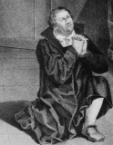

“Sözümü geri alamam, almayacağım; çünkü vicdana karşı gelmek ne doğru, ne de güvenlidir.”
-Martin Luther

1500’de neredeyse tüm Avrupa Hıristiyanlığa kucak açtı. Ortaçağ Avrupa’sındaki tek tek krallıklar birbirleriyle çekişti ve savaştılar, fakat hepsi de aynı Tanrı’ya taptılar. 5. yüzyılda Roma İmparatorluğu’nun düşüşünden sonra Hıristiyanlığın yayılışı, sonunda Fransa, İngiltere, Almanya, Rusya ve İskandinavya’ya ulaşarak hızlandı. Ortaçağ Hıristiyanlığı – inananlar topluluğu – İtalya’nın zeytin bağlarından İzlanda’nın fiyortlarına kadar uzandı.
Ama bu birlik, Ortaçağ boyunca kiliseye karşı büyüyen mutsuzluğu maskeledi. Vebanın korkusu pek çok Avrupalıyı hayal kırıklığına uğrattı; çünkü birçoğu Tanrı’nın o kadar çok insanın ölmesine nasıl izin verebildiğini anlayamadı. Rönesans, geleneksel Hıristiyan öğretilerine meydan okudu. Roma Katolik Kilisesi’nin rüşvet alması ve yolsuzluk yapması en hevesli müritlerinin çoğunu umutsuzluğa düşürdü.
1517’de Martin Luther (1483-1546) adında hüsrana uğramış Alman bir rahip, Wittenberg’de katedralin kapılarına bir bildiri astı. Bu bildiri, Luther’in Papa’nın liderliğine ve Roma Katolik Kilisesi’ne yönelttiği yıkıcı bir suçlama olan Doksan Beş Tezini içeriyordu. Luther’in ana suçlaması Roma’daki kilise ruhban sınıfının çok açgözlü ve çürümüş olmasıydı. O zamanlar Papa yeni katedrallerin inşasına para bulabilmek için zengin tüccarlara günahlardan affedilme belgesi satıyordu. Bu belge, günahları için alıcıyı resmen affediyordu. En yüksek teklif verene, günahlarından affedilmesi satışı uygulaması Luther’i derin bir şekilde rencide etti.
Luther’in tezi Avrupa Hıristiyanlığı içinde hızlı ve büyük bir bölünmeye yol açtı. Avrupa’nın pek çok köşesinde, kiliseye yönelttiği eleştirileri bilinçli bir dinleyici kitlesi buldu. Luther’in müritleri, Reformist olarak da bilinen dini bir hareketin içinde Papa’nın geleneksel otoritesini reddederek Protestan oldular. Birkaç yıl içinde İngiltere ve Kuzey Avrupa’nın pek çok diğer ülkesi Papa’nın liderliğini reddetti ve böylece kıtada dini bölünme yaşandı. .
Roma’da ise Papa, Luther’i bir sapkın olarak lanetledi ve Katolikler ve Luther’in müritleri arasında bir dizi din savaşı yaşandı. Bu savaşlar 1648’de Westphalia Barışı’na dek bir yüzyıl boyunca aralıklarla devam etti. Luther’in Roma’ya karşı çıkmasıyla Batı Avrupa’nın dini birliği sonsuza dek parçalandı.
EK BİLGİLER:
1. İngiltere Kralı VIII. Henry, başlangıçta Luther’e karşı çıktı; ancak Papa’nın kralın eşini, Aragonlu Catherine’den boşanmasına izin vermeyince 1534’te Katolikliği reddetti.
2. 1522’de Luther sadece on bir hafta içinde Yeni Ahit’in Almanca bir tercümesini yaptı. Böylece Almanlar kutsal kitabı ilk kez kendi dillerinde okuma şansını buldu.